Model Outputs
This report summarizes the model outputs for a particular run of BRAT, and provides some information on the input data used and intermediate data generated. For more detailed model documentation, visit the BRAT Documentation
BRAT Dam Capacity Results
The BRAT capacity model produces values for each stream segment that represent the density of dams (dams/km or dams/mi) that the segment can support based on the nearby vegetation, the reaches hydrology, and its slope. The output field `oCC_EX` represents total capacity based on these inputs with existing vegetation cover, and `oCC_HPE` represents the capacity based on these inputs and modeled historic vegetation cover. For display output values are categorized based on these bins:
| None | 0 dams |
|---|---|
| Rare | 0-1 dams/km (0-2 dams/mi) |
| Occasional | 1-5 dams/km (2-8 dams/mi) |
| Frequent | 5-15 dams/km (8-24 dams/mi) |
| Pervasive | 15-40 dams/km (24-64 dams/mi) |
The following table contains the total beaver dam capacity for the watershed based on existing and historic vegetation. The vegetation only entries are capacitites based on only the vegetation fuzzy inference system; the others are based on the combined fuzzy inferences system that accounts for hydrology and slope.
| Existing capacity (vegetation only) | 10,248 |
|---|---|
| Historic capacity (vegetation only) | 21,563 |
| Existing capacity | 6,706 |
| Historic capacity | 11,475 |
The following plots summarize the outputs for existing dam capacity and historic dam capacity.
Existing Capacity Summary
| Category | Reach Count | Length (km) | Length (mi) | Percent (%) |
|---|---|---|---|---|
| None | 61 | 13.95 | 8.67 | 1.62 |
| Rare | 79 | 17.02 | 10.58 | 1.97 |
| Occasional | 1,833 | 418.02 | 259.75 | 48.4 |
| Frequent | 1,496 | 336.7 | 209.22 | 38.99 |
| Pervasive | 455 | 77.56 | 48.19 | 8.98 |
| Total | 3,924 | 863.25 | 536.4 | 99.95 |
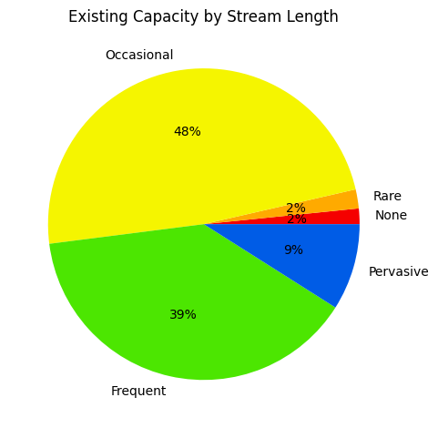
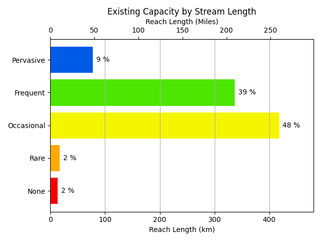
Historic Capacity Summary
| Category | Reach Count | Length (km) | Length (mi) | Percent (%) |
|---|---|---|---|---|
| None | 61 | 13.95 | 8.67 | 1.62 |
| Rare | 0 | 0 | 0 | 0 |
| Occasional | 548 | 123.59 | 76.79 | 14.31 |
| Frequent | 1,986 | 477.58 | 296.75 | 55.3 |
| Pervasive | 1,329 | 248.14 | 154.19 | 28.73 |
| Total | 3,924 | 863.25 | 536.4 | 99.95 |
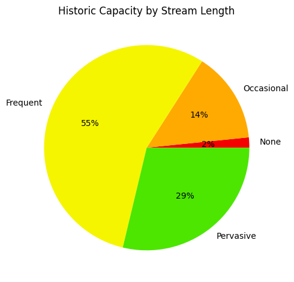
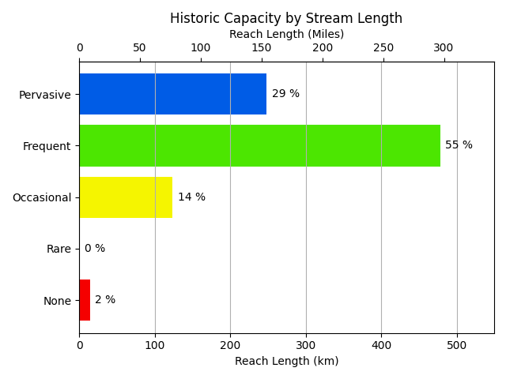
Conservation and Management
BRAT produces several conservation and management outputs that can be utilized to inform planning for restoration using beaver or conservation of riverscapes influenced by beaver dam building. These include outputs representing risk of conflict from dam building activity, opportunities for conservation of beaver or restoration using beaver, and factors limiting beaver building activity.
Risk
Risk of conflict from dam building activity is based on the possibility of dam building, land use intensity, and proximity to infrastructure.
| Risk | Total Length (km) | Total Length (mi) | Reach Count | % |
|---|---|---|---|---|
| Negligible Risk | 265.41 | 164.95 | 1,077 | 30.73 |
| Some Risk | 71.02 | 44.14 | 474 | 8.22 |
| Minor Risk | 184.54 | 114.69 | 800 | 21.37 |
| Considerable Risk | 342.28 | 212.73 | 1,573 | 39.63 |
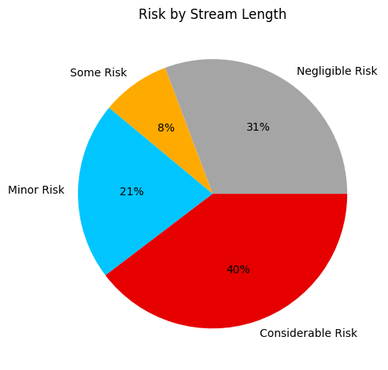
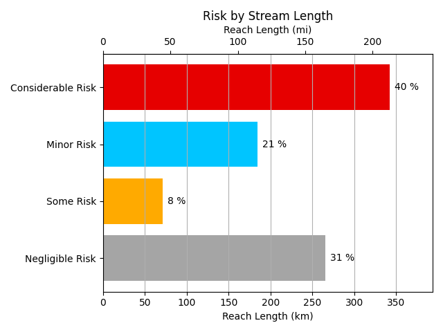
Opportunity
Opportunities for restoration/conservation are based on the difference between historic and existing dam building capacity, land use intensity, and risk of undesireable dams.
| Opportunity | Total Length (km) | Total Length (mi) | Reach Count | % |
|---|---|---|---|---|
| Conservation/Appropriate for Translocation | 115.59 | 71.84 | 474 | 13.38 |
| Encourage Beaver Expansion/Colonization | 36.97 | 22.97 | 152 | 4.28 |
| Conflict Management | 24.87 | 15.46 | 197 | 2.88 |
| Beaver Mimicry | 220.29 | 136.91 | 937 | 25.51 |
| Land Management Change | 24.38 | 15.15 | 121 | 2.82 |
| Potential Floodplain/Side Channel Opportunities | 5.23 | 3.25 | 26 | 0.61 |
| Natural or Anthropogenic Limitations | 435.92 | 270.92 | 2,017 | 50.47 |
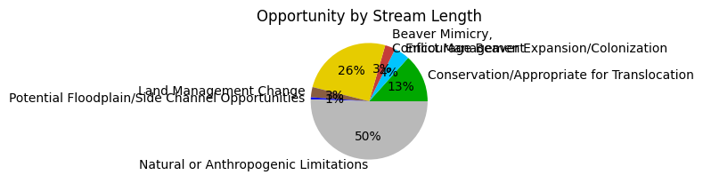
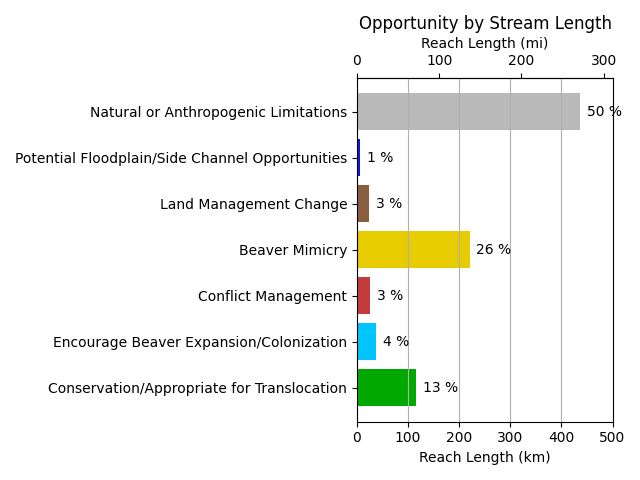
Limitation
Limitation categories characterize areas where dam building is not possible, either due to natural or anthropogenic factors.
| Limitation | Total Length (km) | Total Length (mi) | Reach Count | % |
|---|---|---|---|---|
| Dam Building Possible | 848.59 | 527.4 | 3,860 | 98.25 |
| Naturally Vegetation Limited | 0 | 0 | 0 | 0 |
| Potential Reservoir or Land Use Change | 0 | 0 | 0 | 0 |
| Other | 0 | 0 | 0 | 0 |
| Stream Power Limited | 0.71 | 0.44 | 3 | 0.08 |
| Anthropogenically Limited | 0 | 0 | 0 | 0 |
| Slope Limited | 13.94 | 8.66 | 59 | 1.61 |
| Stream Size Limited | 0.01 | 0.01 | 2 | 0 |
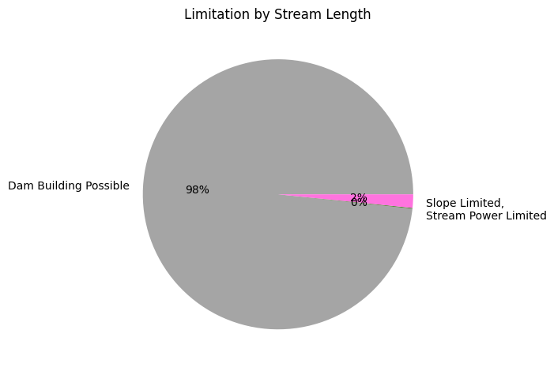
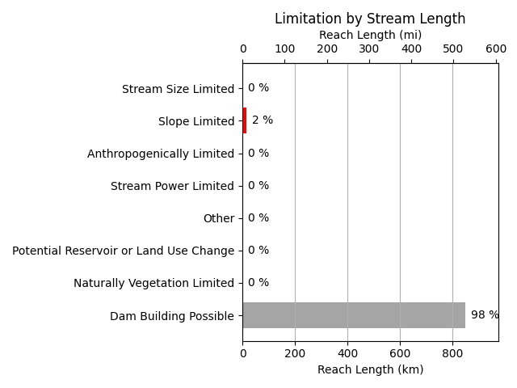
Model Intermediates
Reach Average Slope
Summary of reach average slopes. At very low slopes, dam building capacity is reduced because a single dam backs water up farther, and at high slopes (>~23 degrees), beaver typically do not build dams.
Reach Average Slope Summary
| Category | Reach Count | Length (km) | Length (mi) | Percent (%) |
|---|---|---|---|---|
| 0 - 0.5% | 2,332 | 536.96 | 333.65 | 62.17 |
| 0.5 - 1% | 248 | 38.9 | 24.17 | 4.5 |
| 1 - 3% | 442 | 78.01 | 48.47 | 9.03 |
| 3 - 8% | 467 | 105.48 | 65.55 | 12.21 |
| 8 - 23% | 378 | 90.37 | 56.15 | 10.46 |
| >23% | 59 | 13.94 | 8.66 | 1.61 |
| Total | 3,926 | 863.66 | 536.66 | 100 |
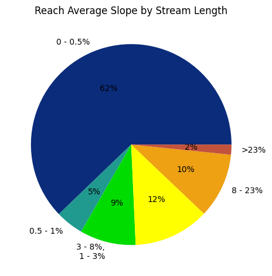
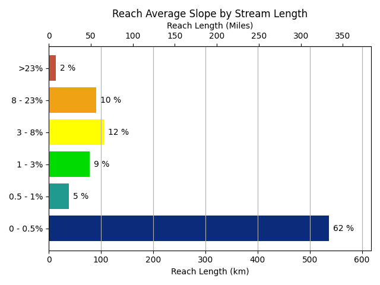
Hydrology
Below are the equations used to estimate baseflow and peak flow (~two-year recurrence interval), as well as the values used for the parameters in those equations.
| Drainage area threshold (sqkm) above which dams are not built | 700.0 |
|---|---|
| Baseflow equation | 1.24091*(10**-4.9853)*(DRNAREA**1.1710)*(PRECIP**2.5811) |
| Peak Flow equation | 0.003119*(DRNAREA**1.021)*(MEANSLOPE**0.8124)*(I24H2Y**2.050)*(JANMINT2K**3.541)*(JANMAXT2K**-1.867) |
Hydrological Parameters
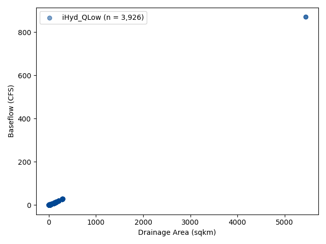
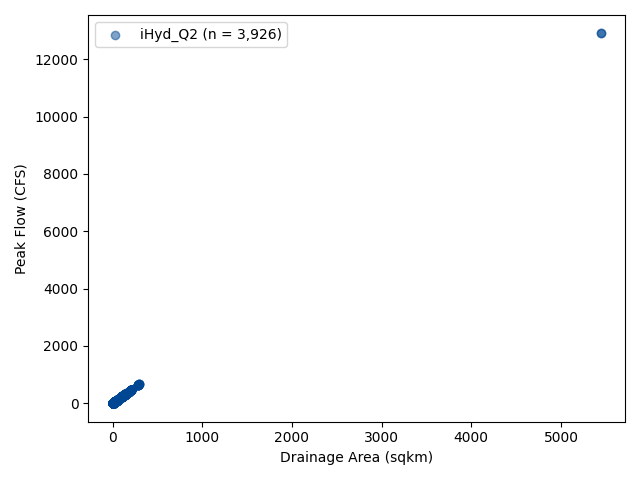
Base Flow Stream Power
Low flow stream power helps determine whether or not dam building activity can occur at base flows. Below are the stream power values and their associated categories.
| Can Build Dam | 0 - 160 Watts |
|---|---|
| Probably Can Build Dam | 160 - 185 Watts |
| Cannot Build Dam | >185 Watts |
Low Flow Stream Power Summary
| Category | Reach Count | Length (km) | Length (mi) | Percent (%) |
|---|---|---|---|---|
| Can Build Dam | 3,799 | 833.12 | 517.68 | 96.46 |
| Probably Can Build Dam | 125 | 30.53 | 18.97 | 3.54 |
| Cannot Build Dam | 2 | 0.01 | 0.01 | 0 |
| Total | 3,926 | 863.66 | 536.66 | 100 |
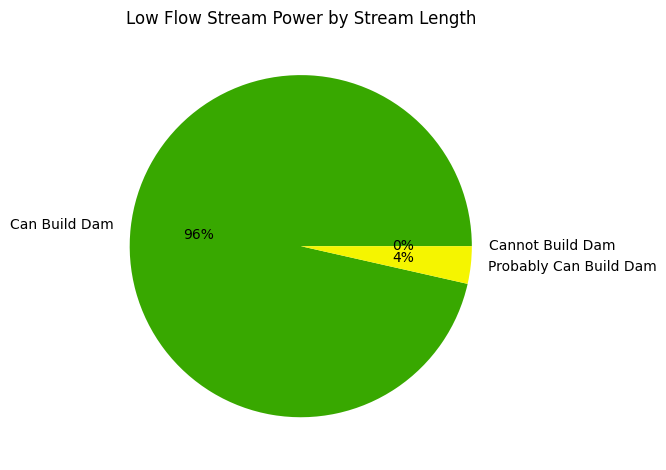
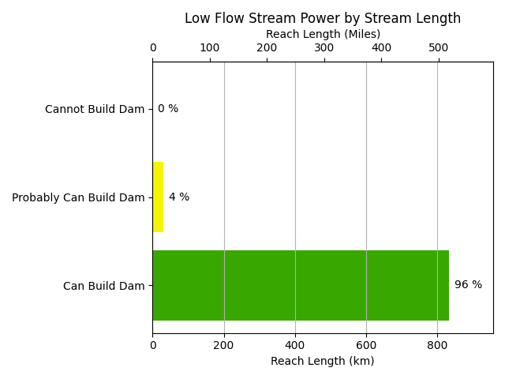
High Flow Stream Power
High flow stream power helps determine whether or not dams can persist at typical flood flows. Below are the stream power values and their associated categories.
| Dam Persists | 0 - 1100 Watts |
|---|---|
| Potential Dam Breach | 1100 - 1400 Watts |
| Potentail Dam Blowout | 1400 - 2200 Watts |
| Dam Blowout | >2200 Watts |
Flood Flow Stream Power Summary
| Category | Reach Count | Length (km) | Length (mi) | Percent (%) |
|---|---|---|---|---|
| Dam Persists | 3,886 | 854.47 | 530.94 | 98.94 |
| Potential Dam Breach | 22 | 5.27 | 3.27 | 0.61 |
| Potential Dam Blowout | 13 | 3.2 | 1.99 | 0.37 |
| Dam Blowout | 5 | 0.73 | 0.45 | 0.08 |
| Total | 3,926 | 863.66 | 536.66 | 100 |
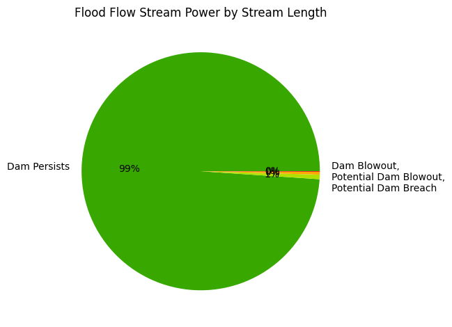
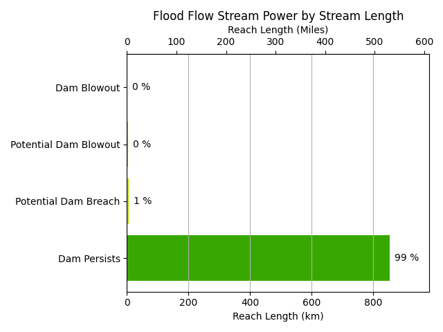
Proximity to Infrastructure
Summary for distance to nearest infrastructure, which is used for modeling risk of undesirable dam building.
| Not Close | > 1 km |
|---|---|
| Outside Range of Concern | 300 m - 1 km |
| Within Plausible Forage Range | 100 m - 300 m |
| Within Normal Forage Range | 30 m - 100 m |
| Immediately Adjacent | 0 m - 30 m |
Distance to Nearest Potential Conflict Summary
| Category | Reach Count | Length (km) | Length (mi) | Percent (%) |
|---|---|---|---|---|
| Not Close | 530 | 139.54 | 86.71 | 16.16 |
| Outside Range of Concern | 1,034 | 249.29 | 154.9 | 28.86 |
| Within Plausable Forage Range | 875 | 212.27 | 131.9 | 24.58 |
| Within Normal Forage Range | 822 | 169.01 | 105.02 | 19.57 |
| Immediately Adjacent | 665 | 93.55 | 58.13 | 10.83 |
| Total | 3,926 | 863.66 | 536.66 | 100 |
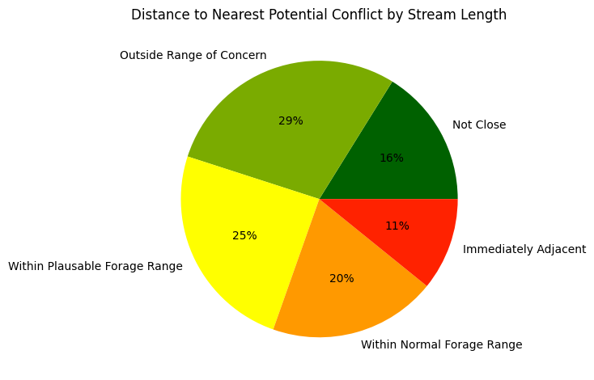
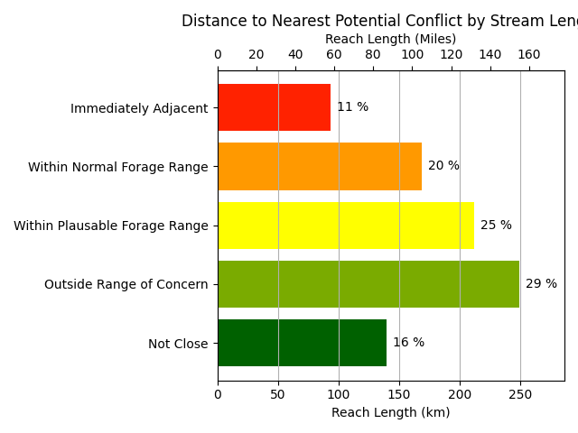
Land Use Intensity
Summary for land use intensity averaged over the zone surrounding each stream reach, used in modeling potential for conflict from dam building.
Land Use Intensity Summary
| Category | Reach Count | Length (km) | Length (mi) | Percent (%) |
|---|---|---|---|---|
| Very Low | 918 | 215.25 | 133.75 | 24.92 |
| Low | 2,278 | 493.2 | 306.46 | 57.11 |
| Moderate | 683 | 148.66 | 92.38 | 17.21 |
| High | 42 | 6.31 | 3.92 | 0.73 |
| Total | 3,921 | 863.42 | 536.5 | 99.97 |
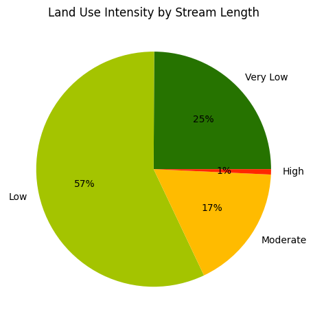
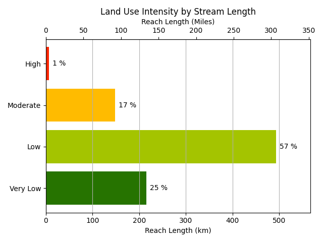
Model Inputs
Drainage Network
This section contains information on the drainage network used in this run of BRAT, as well as some information about the watershed.
| Number of reaches | 3,926 |
|---|---|
| Total reach length (km) | 864 |
| Total reach length (miles) | 537 |
| Watershed ID | 1801020303 |
| Watershed Name | Upper Klamath Lake |
| Ecoregion | Eastern Cascades Slopes and Foothills |
| Area (Sqkm) | 1875.15 |
| States | OR |
| Reach Type | Total Length (km) | % of Total |
|---|---|---|
| Artificial Path | 128.5 | 14.9 |
| Canal - Ditch | 327.2 | 37.9 |
| Connector | 0.1 | 0.0 |
| Ephemeral | 17.5 | 2.0 |
| Intermittent | 268.3 | 31.1 |
| Perennial | 118.7 | 13.7 |
| Stream | 3.4 | 0.4 |
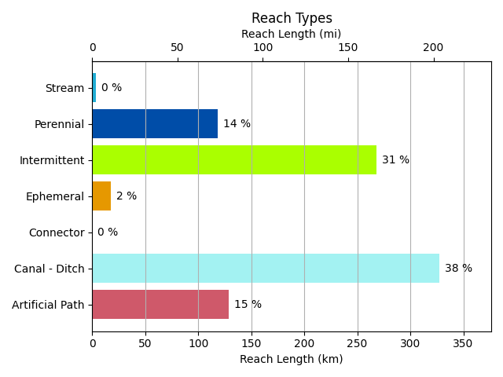
Vegetation
Historic Vegetation
The 30 most common historic vegetation types within the 100m reach buffer.
| Vegetation ID | Vegetation Type | Total Area (sqkm) | Default Suitability | Override Suitability | Effective Suitability |
|---|---|---|---|---|---|
| 840 | Inter-Mountain Basins Montane Riparian Systems | 331.877013 | 4 | None | 4 |
| 798 | Mediterranean California Mesic Mixed Conifer Forest and Woodland | 184.27495 | 2 | None | 2 |
| 11 | Open Water | 172.790684 | 4 | None | 4 |
| 802 | Mediterranean California Red Fir Forest | 83.94334 | 2 | None | 2 |
| 801 | California Montane Jeffrey Pine(-Ponderosa Pine) Woodland | 58.834722 | 2 | None | 2 |
| 843 | North Pacific Montane Riparian Woodland and Shrubland - Dry | 58.771862 | 4 | None | 4 |
| 838 | California Montane Riparian Systems | 51.563004 | 4 | None | 4 |
| 797 | Mediterranean California Dry-Mesic Mixed Conifer Forest and Woodland | 32.105087 | 2 | None | 2 |
| 817 | Northern Rocky Mountain Ponderosa Pine Woodland and Savanna - Xeric | 18.509308 | 2 | None | 2 |
| 792 | Columbia Plateau Western Juniper Woodland and Savanna | 13.808168 | 2 | None | 2 |
| 810 | North Pacific Mountain Hemlock Forest - Xeric | 12.590977 | 2 | None | 2 |
| 834 | Inter-Mountain Basins Big Sagebrush Steppe | 11.002342 | 2 | None | 2 |
| 835 | Inter-Mountain Basins Montane Sagebrush Steppe | 8.846066 | 2 | None | 2 |
| 824 | Inter-Mountain Basins Big Sagebrush Shrubland | 8.322236 | 2 | None | 2 |
| 816 | Northern Rocky Mountain Ponderosa Pine Woodland and Savanna - Mesic | 6.513592 | 2 | None | 2 |
| 845 | Rocky Mountain Poor-Site Lodgepole Pine Forest | 4.124926 | 2 | None | 2 |
| 848 | Sierran-Intermontane Desert Western White Pine-White Fir Woodland | 2.803921 | 2 | None | 2 |
| 31 | Barren-Rock/Sand/Clay | 2.297234 | 0 | None | 0 |
| 818 | Rocky Mountain Subalpine Mesic-Wet Spruce-Fir Forest and Woodland | 1.690543 | 2 | None | 2 |
| 821 | Inter-Mountain Basins Curl-leaf Mountain Mahogany Woodland and Shrubland | 1.334339 | 2 | None | 2 |
| 844 | Northern Rocky Mountain Foothill Conifer Wooded Steppe | 1.188619 | 2 | None | 2 |
| 815 | Northern Rocky Mountain Subalpine Woodland and Parkland | 0.784793 | 2 | None | 2 |
| 793 | East Cascades Mesic Montane Mixed-Conifer Forest and Woodland | 0.743839 | 3 | None | 3 |
| 827 | California Montane Woodland and Chaparral | 0.447637 | 1 | None | 1 |
| 800 | Mediterranean California Lower Montane Black Oak-Conifer Forest and Woodland | 0.359062 | 2 | None | 2 |
| 833 | Columbia Plateau Low Sagebrush Steppe | 0.293345 | 1 | None | 1 |
| 842 | North Pacific Montane Riparian Woodland and Shrubland - Wet | 0.176197 | 4 | None | 4 |
| 820 | East Cascades Oak-Ponderosa Pine Forest and Woodland | 0.162864 | 2 | None | 2 |
| 850 | North Pacific Dry-Mesic Silver Fir-Western Hemlock-Douglas-fir Forest | 0.157149 | 2 | None | 2 |
| 787 | Inter-Mountain Basins Sparsely Vegetated Systems | 0.132386 | 0 | None | 0 |
Suitability Breakdown
The area weighted average historic vegetation suitability is 3.14. The breakdown of the percentage of the 100m buffer within each suitability class across all reaches in the watershed.
| Suitability Class | % with 100m Buffer |
|---|---|
| 0 | 0.23 |
| 0.5 | 0 |
| 1 | 0.09 |
| 1.5 | 0 |
| 2 | 42.17 |
| 2.5 | 0 |
| 3 | 0.07 |
| 3.5 | 0 |
| 4 | 57.44 |
Existing Vegetation
The 30 most common existing vegetation types within the 100m reach buffer.
| Vegetation ID | Vegetation Type | Total Area (sqkm) | Default Suitability | Override Suitability | Effective Suitability |
|---|---|---|---|---|---|
| 7292 | Open Water | 172.790684 | 4 | None | 4 |
| 9011 | North American Arid West Emergent Marsh | 155.553808 | 1 | 4 | 4 |
| 7967 | Western Cool Temperate Pasture and Hayland | 147.918266 | 2 | 2 | 2 |
| 7027 | Mediterranean California Dry-Mesic Mixed Conifer Forest and Woodland | 131.212839 | 2 | None | 2 |
| 7032 | Mediterranean California Red Fir Forest | 120.225735 | 2 | None | 2 |
| 7968 | Western Cool Temperate Wheat | 48.984806 | 1 | None | 1 |
| 7299 | Developed-Roads | 38.956788 | 0 | None | 0 |
| 7158 | North Pacific Montane Riparian Woodland | 36.478594 | 4 | None | 4 |
| 7017 | Columbia Plateau Western Juniper Woodland and Savanna | 34.797575 | 2 | None | 2 |
| 7053 | Northern Rocky Mountain Ponderosa Pine Woodland and Savanna | 32.308904 | 2 | None | 2 |
| 7031 | California Montane Jeffrey Pine-(Ponderosa Pine) Woodland | 24.240012 | 2 | None | 2 |
| 7965 | Western Cool Temperate Close Grown Crop | 17.656893 | 1 | None | 1 |
| 7964 | Western Cool Temperate Row Crop | 11.850948 | 2 | None | 2 |
| 7080 | Inter-Mountain Basins Big Sagebrush Shrubland | 10.188977 | 2 | None | 2 |
| 7156 | North Pacific Lowland Riparian Forest | 9.343229 | 4 | None | 4 |
| 7041 | North Pacific Mountain Hemlock Forest | 7.851741 | 2 | None | 2 |
| 7037 | North Pacific Maritime Dry-Mesic Douglas-fir-Western Hemlock Forest | 7.142189 | 2 | None | 2 |
| 7084 | North Pacific Montane Shrubland | 5.924998 | 2 | None | 2 |
| 7157 | North Pacific Lowland Riparian Shrubland | 5.868805 | 3 | None | 3 |
| 7901 | Western Cool Temperate Urban Evergreen Forest | 5.240208 | 2 | None | 2 |
| 9308 | Great Basin & Intermountain Introduced Annual Grassland | 4.059209 | 1 | 2 | 2 |
| 7126 | Inter-Mountain Basins Montane Sagebrush Steppe | 3.913489 | 2 | None | 2 |
| 7098 | California Montane Woodland and Chaparral | 3.867773 | 1 | None | 1 |
| 7028 | Mediterranean California Mesic Mixed Conifer Forest and Woodland | 3.366801 | 2 | None | 2 |
| 7124 | Columbia Plateau Low Sagebrush Steppe | 3.33918 | 2 | None | 2 |
| 9006 | Inter-Mountain Basins Cliff and Canyon | 3.241081 | 0 | None | 0 |
| 7123 | Columbia Plateau Steppe and Grassland | 2.566769 | 1 | None | 1 |
| 7296 | Developed-Low Intensity | 2.16961 | 1 | None | 1 |
| 7966 | Western Cool Temperate Fallow/Idle Cropland | 2.105798 | 1 | None | 1 |
| 7903 | Western Cool Temperate Urban Herbaceous | 2.011509 | 2 | None | 2 |
Suitability Breakdown
The area weighted average existing vegetation suitability is 2.55. The breakdown of the percentage of the 100m buffer within each suitability class across all reaches in the watershed.
| Suitability Class | % with 100m Buffer |
|---|---|
| 0 | 4.27 |
| 0.5 | 0 |
| 1 | 7.44 |
| 1.5 | 0 |
| 2 | 52.46 |
| 2.5 | 0 |
| 3 | 0.86 |
| 3.5 | 0 |
| 4 | 34.96 |